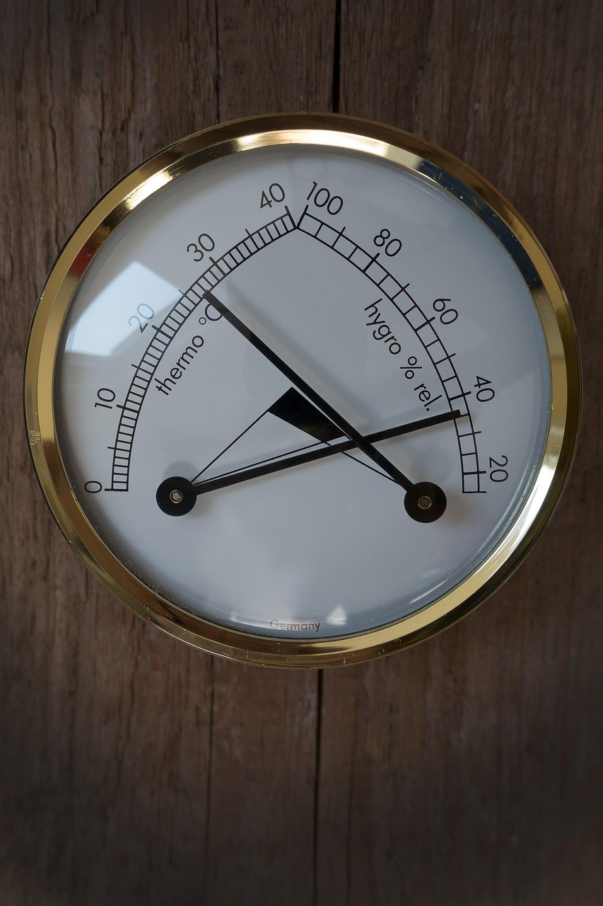

이 포스팅은 쿠팡 파트너스 활동의 일환으로, 이에 따른 일정액의 수수료를 제공받습니다.
[사진 1: 썸네일]
아침에 커튼을 걷었더니 창틀에 물이 고여 있나요? 여름에 쓰던 제습기를 꺼내 틀어 봐도 겨울엔 물통이 덜 차서 고장인가 싶을 때가 있어요.
고장이 아니라 방식 차이일 수 있어요. 겨울 결로 제습기 방식은 크게 컴프레서식과 제올라이트(데시칸트)식으로 나뉘는데, 추운 방에서는 둘의 차이가 커져요. 오늘은 자주 묻는 질문 순서로 차이와 고르는 법을 정리해 드릴게요.
[사진 2]
📷 [직접 찍은 사진 넣기: 아침에 물방울이 맺힌 창문이나 창틀 모습]
컴프레서식은 냉매로 차갑게 만든 판에 공기를 지나가게 해서 수증기를 물방울로 맺히게 해요. 그런데 방 자체가 차가우면 공기와 차가운 판의 온도 차가 줄어들어 물이 잘 맺히지 않아요. 그래서 실내 온도가 낮을수록 제습량이 떨어지는 편이에요.
결로는 따뜻하고 습한 실내 공기가 차가운 창이나 벽에 닿을 때 생겨요. 겨울엔 창이 차가워 습도가 아주 높지 않아도 물이 맺혀요.
✍️ [내 경험 한두 줄: 우리 집에서 결로가 제일 심한 곳은 어디인가요? (창문/베란다/벽 모서리)]
제올라이트식은 습기를 빨아들이는 소재가 수분을 붙잡고, 히터로 그 소재를 데워 수분을 떼어 내 물통에 모으는 방식이에요. 냉각에 기대지 않아 기온이 낮은 방에서도 성능이 비교적 잘 유지돼요. 아래는 일반적인 특징이라 제품마다 차이가 있어요.
| 구분 | 컴프레서식 | 제올라이트(데시칸트)식 |
|---|---|---|
| 원리 | 차갑게 식혀 물방울로 | 흡습 소재로 빨아들인 뒤 가열 |
| 추운 방 | 제습량이 줄기 쉬움 | 비교적 잘 유지됨 |
| 전기 사용 | 상대적으로 적은 편 | 히터 때문에 많은 편 |
| 실내 온도 | 거의 변화 없음 | 따뜻한 바람이 나와 조금 오름 |
| 무게·소음 | 무겁고 압축기 소리 | 가볍고 조용한 편 |
| 잘 맞는 계절 | 여름·장마 | 겨울 결로, 난방 약한 방 |
[사진 3]
여름 장마가 주된 고민이고 겨울엔 난방을 충분히 한다면 컴프레서식 하나로도 무난해요. 반대로 난방을 약하게 하는 방, 북향 방, 베란다 쪽 방처럼 실내가 서늘하고 겨울 결로가 고민이라면 제올라이트식이 잘 맞아요.
여름용 제습기가 이미 있다면 겨울용으로 작은 제올라이트식을 하나 더 두는 방법도 있어요. 한 대로 끝내려면 작동 온도 범위를 꼭 확인하세요.
제습기 용량은 하루에 모을 수 있는 물의 양(L/일)으로 표시돼요. 다만 이 수치는 정해진 시험 조건에서 잰 값이라 추운 겨울 방에서는 그만큼 나오지 않을 수 있어요. 한국소비자원 시험에서도 표시 제습량과 실제 측정값이 다른 제품이 있었어요. 그래서 아래 항목을 함께 보세요.
[사진 4]
📷 [직접 찍은 사진 넣기: 거실이나 방에 놓인 습도계 숫자]
하루 종일 켜 두기보다 습도계로 확인하고 필요한 시간에만 돌리세요. 요리·샤워·빨래 건조 뒤 창을 잠깐 열어 환기하고, 그다음 제습기를 켜면 효율적이에요.
창틀에 맺힌 물은 마른 걸레로 바로 닦아 주세요. 제습기는 습기를 줄여 줄 뿐 이미 생긴 곰팡이를 없애 주지는 않아요.
✍️ [내 경험 한두 줄: 결로가 생기면 지금은 어떻게 처리하고 있나요?]
Q. 제습기를 켜면 방이 건조해지지 않나요?
A. 습도 설정 기능이 있으면 원하는 습도에서 멈춰요. 습도계를 보며 지나치게 낮아지지 않게 맞추세요.
Q. 가습기와 같이 써도 되나요?
A. 서로 반대 일을 하니 같은 방에서 동시에 켜면 전기만 더 써요.
Q. 제올라이트식은 전기세가 많이 나오나요?
A. 히터를 쓰는 만큼 같은 시간이면 더 쓰는 편이에요. 표시 소비전력을 보고 필요한 시간에만 켜세요.
정리하면, 여름 장마가 주 고민이면 컴프레서식, 서늘한 방의 겨울 결로가 고민이면 제올라이트식이에요. 겨울 결로 제습기 방식을 정한 다음 제습량 조건과 소비전력, 습도 설정 기능을 확인하면 실패가 적어요.
여러분 집은 결로가 어디에 제일 많이 생기나요? 결로 줄이는 팁이 있다면 댓글로 나눠 주세요.
인스타그램 @todayzip.info 에서 살림 꿀팁을 30초 영상으로도 볼 수 있어요.
이 포스팅은 쿠팡 파트너스 활동의 일환으로, 이에 따른 일정액의 수수료를 제공받습니다.